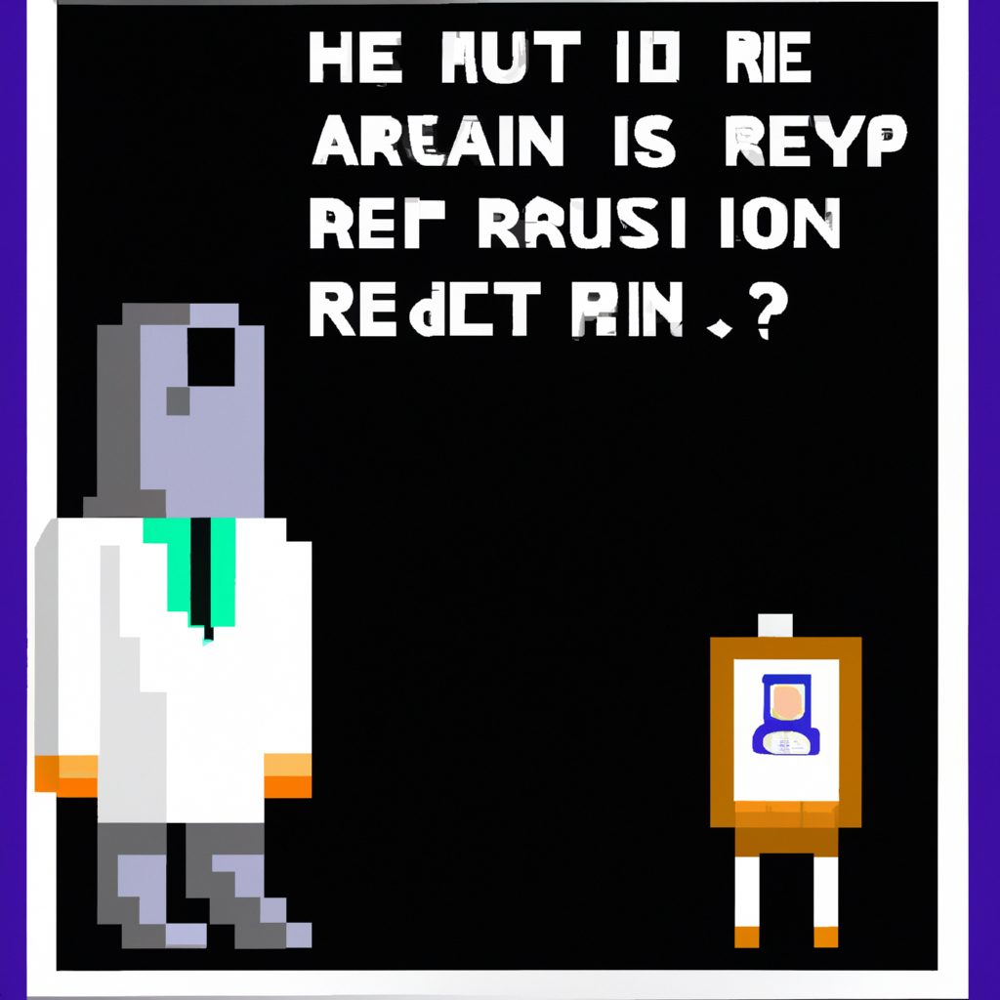

Why AI will never replace the radiologist
Artificial Intelligence (AI) has been a hot topic in the medical field lately. As more and more advancements in machine learning and AI are made, some people have started to question whether or not AI will ever be able to replace radiologists. While it is true that AI has the potential to be a powerful tool for radiologists, there are a number of reasons why AI will never fully replace radiologists.
First and foremost, AI is only as effective as its programming. AI is only capable of recognizing patterns, but it cannot recognize nuances or anomalies that a human radiologist can. AI is programmed with certain parameters and will only recognize things that fall within those parameters. A human radiologist has the ability to recognize subtle differences that AI cannot.
Second, radiologists have the ability to make decisions based on their experience and expertise. With AI, decisions are based purely on data and algorithms, which can be limited compared to the experience and expertise of a radiologist.
Finally, radiologists have a more holistic approach to medical care. AI cannot provide the same level of patient care that a radiologist can. Radiologists can provide advice and recommendations that are tailored to the individual patient and their particular situation.
In conclusion, AI has the potential to be an incredibly powerful tool for radiologists, but it will never fully replace them. Radiologists are able to provide a level of care that AI cannot. AI is limited in its ability to recognize nuances and make decisions based on experience and expertise. Ultimately, AI will never replace the radiologist.